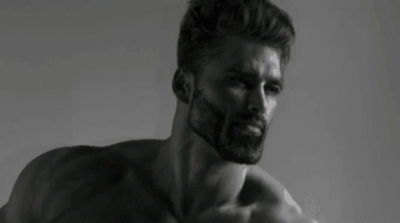
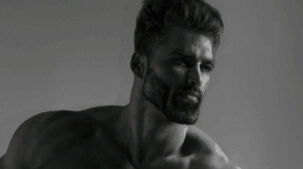
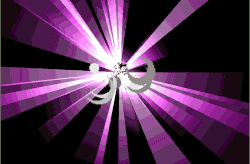
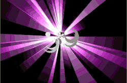

Reputace
Budete se muset seznámit s místnímy obyvately aby jste nebyli sněděni za živa. Potom i dávat dárky. Další způsob jak si zlepšit reputaci: 1.choďte na akce. Pokud nejste schopni mluvit místni řečí tak se modlete aby vás neobětovali bohu nebo, nesnědli. Pokud se bojíte místních jdete se zabydlet do lesa a postavte si dům. A nakonec nabarvěte se na černo.
Peníze
Tipy jak získat peníze... 1. Farmařte 2.Prodejte své oblečení 3.lovte zvířata 4.těžte v dolech. Famaření je nejčastější formou práce v Africe získejte zkušenosti a staňte se nejlepším farmářem. Prodejte vše co máte při nejhorším i orgány, tento způsob hospodaření je jen dočasný a doporučuje se jen do early game. Staňte se pravou opicí, buďte jako váš prapraprapraprapraděda a lovte aby jste přežili, tohle je nejtěžší life-style ale místní lidé vás budou zbožňovat. Chyťte krumpáč do svých rukou a vydejte se do temných dolů Afriky. Možná najdete diamanty.
Hygiena
Chcete přežít? zabydlete se u moře a koupejte se každý den. kupte si druhý lvl2 naši letenky a budete očkováni. seženete si svoje jídlo. kupte si respirátory.
End game
Podle typu života co jste si vybral máte hodne konců. staňte se kralem divočiny. nejlepším farmářem. šamanem místní vesnice, a nebo vlastněte stovky otroků. pokud se dostanete do této části, můžete konečně utéct, ale nikomu se to zatím nepovedlo. Goodluck !

 

 
